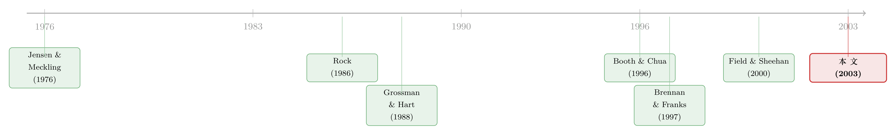

新股「打折」，原来是为了把外人挡在门外
本文读的是 Smart & Zutter (2003, Journal of Financial Economics)：在 1990–1998 年的美国 IPO 里，发行双层股权（dual-class）的公司，其上市首日的「折价」比普通单一股权（single-class）公司低约 3 个百分点——控制权一旦被锁死，老板就失去了「打折拉散户、稀释股权」的动机。换句话说，新股折价的一部分，竟是一笔买「分散股权、躲开监督」的费用。
1 一个老问题里的新裂缝
IPO 折价（underpricing）大概是公司金融里被研究得最透的现象之一。一家公司上市，定价 10 块，开盘冲到 12 块——这中间凭空「漏」掉的 20%，就是发行人留在桌上的钱（money left on the table）。四十年来，学界为这笔钱编了一整套解释：赢家诅咒、信息生产、承销商声誉、信号传递……（关于这个问题本身是不是「真折价」，可参见《新股到底是「打折」卖，还是「溢价」卖？》。）
但这些解释几乎都站在同一个屋檐下：信息不对称。买卖双方谁知道得多、谁吃亏，决定了折价的大小。
Smart 和 Zutter 这篇文章的野心，是要在这堵墙上凿一道新的裂缝——他们想问的是：折价，会不会跟「谁说了算」有关？
这听上去有点不着边际。首日收益率和公司治理，井水不犯河水，凭什么扯到一起？
接着，一个自然的切入口出现了：双层股权 IPO。在典型的双层结构里，内部人把投票权弱（甚至无投票权）的普通股卖给公众，自己攥着一类「超级投票权」的股票——最常见的安排是私人持有的那一类每股 10 票。于是现金流权和投票权被人为地掰开：你出钱，我说了算。
这就给了作者一把天然的手术刀。如果折价真的跟控制权有关，那么「控制权早已上锁」的双层股权公司，和「控制权还悬而未决」的单一股权公司，在折价上就该有系统性的差别。
这正是双层股权 IPO 作为研究场景的妙处：它不是事后的资本重组（recapitalization，老股东把已上市的股票换成双层结构），而是公司第一次面向公众定价。外部投资者一开始就是按「投票权打了折」的条款买入的（Jensen & Meckling, 1976 早就点出这种利益错位），裂缝是清清楚楚摆在台面上的。
2 核心机制：折价是一种「赶人」的手段
要把故事讲透，得先请出这篇文章真正依赖的那块理论基石——Brennan 和 Franks (1997) 的「减少监督假说」（reduced monitoring hypothesis）。
它的逻辑是这样一条链：内部人珍视「不被人盯着」的独立性 → 于是故意把新股定低，制造超额需求 → 有了超额需求，承销商就能「挑客户」，把股票配给一大群各买一点的小散户，而对那些想吃下大块头、将来好对管理层指手画脚的大买家「歧视性地」少配甚至不配 → 结果是股权高度分散，没有大股东 → 没人有动力（也没人有足够股份）去监督管理层。
一句话：折价是内部人花钱买来的「股权分散」，而股权分散是用来躲开监督的。
到这里，真正关键的一步出现了。Brennan 和 Franks 自己在文章里就留了一个伏笔：这套逻辑是针对「一股一票」的普通发行说的；如果公司直接发无投票权的股票，根本就能绕开监督问题，那么用折价来防止「大买家集结」的动机，也就没有必要了。
Smart 和 Zutter 接住的，正是这个伏笔。双层股权公司的资本结构设计，已经把投票权牢牢焊死在管理层手里。控制权既然到手，老板还有什么必要忍痛打折、去防止散户市场上形成大宗股东？动机消失了，折价自然就该小。
于是一个可检验的预测干净利落地立了起来：双层股权 IPO 的折价，应该显著低于单一股权 IPO。
3 数据与样本
作者的主数据来自 Disclosure 公司的 Disclosure New Issues 数据库，覆盖 1990 年 1 月到 1998 年 9 月。
样本止于 1998 年 9 月，这是一个值得留意的「巧合」——它恰好避开了 1999–2000 年互联网泡沫里那些动辄首日翻倍的极端折价。所以这篇文章测的是一个相对「正常」年代的折价，结论不被几只妖股绑架。
筛选过程很透明：从 firm-commitment（包销）的普通股 IPO 出发，原始 3,628 笔，剔重后 2,787 笔，再因其他数据集匹配不上剔掉 165 笔，最终样本 2,622 个 IPO，其中 253 个是双层股权——这个数字是此前任何一篇双层 IPO 研究样本量的两倍多，也是这篇文章底气的来源。发行价限定在 $5 到 $35 之间。
- 机构持股：来自
CDA Prism，取 13f 机构（管理资产 1 亿美元以上）在 IPO 当季末的持股家数与持股比例。 - 被并购：用
COMPUSTAT和CRSP识别上市后变为「不活跃」的公司及原因。能归类的有2,496家（占全样本 95%），其中约 25% 在 1990–1999 年间变得不活跃，而这些「消失」的公司里，93% 是被并购的。
一个先导事实：在双层股权公司里，68% 创设了「每股多于一票」的私有类别，最典型的就是每股 10 票。剩下 32% 名义上「每股一票或更少」的公司，其实也大多通过向公众发无投票权股、或向受《银行控股公司法》限制的金融机构发无表决权 B 股等方式，把控制权留给了内部人。
4 识别与主要结果
4.1 先看「生」数据，别急着下结论
直接比较两组的平均折价（如 Table 2）：单一股权 13.7%，双层股权 11.9%——双层确实更低，但这个均值差并不显著（p = 0.1335）。
可问题在于，这两组公司压根不是一类货色。双层股权公司明显更大（平均发行额 $130.7M vs 单一的 $63.1M）、更爱用高声誉投行（71.1% vs 49.6%）、更少有风投背书（16.2% vs 39.8%）、更少在 Nasdaq 上市（64.0% vs 84.4%）。而这些特征，每一个都早已被文献证明会影响折价。
所以光看均值是会被带偏的。真正关键的一步，是把这些混杂因素摁住，再看双层股权这个「身份」本身值多少。
4.2 回归：摁住一切，折价低 2.9 个百分点
作者跑的是一个标准的横截面折价回归，把首日收益率对一个双层股权虚拟变量、加上一长串控制变量做回归：
$$ \text{InitialReturn}_i = \alpha + \beta\,\text{Dual}_i + \gamma' X_i + \varepsilon_i $$
这里的 \(X_i\) 塞满了文献里公认会影响折价的东西：投行声誉（Megginson-Weiss 市场份额排名）、审计师质量、风投背书、发行价修正（offer-price revision，及其只取正值的非对称项）、发行规模的对数、Nasdaq 虚拟变量、招股书列出的「资金用途」个数的对数、不付股利虚拟变量、反向杠杆收购与股权分拆虚拟变量、反收购条款、年度虚拟变量、IPO 前 22 个交易日的滞后市场收益，以及两位数 SIC 行业虚拟变量。
这个主模型（Table 3）解释了首日收益率横截面变异的 28.5%。而我们关心的那个系数：
控制了其他发行与发行人特征后，双层股权公司的折价比单一股权公司低 2.9 个百分点，在 1% 水平上显著。
2.9 个百分点是什么概念？它超过了平均 IPO 折价的 20%。换算成钱：对一个平均发行额 $130M 的双层公司，少折价意味着多募到约 $3.8M。这不是小数目。
值得一提的是控制变量里的两个「反转」：风投背书和高声誉投行承销的 IPO，在这个样本里反而折价更高——这印证了 Beatty & Welch (1996) 和 Ritter (2003) 关于「1990 年代这两个关系掉了个头」的发现。
4.3 「会不会只是因为它们大？」
一个怀疑者会立刻反问：双层公司折价低，会不会单纯因为它们块头大，而回归里放一个发行额对数根本压不干净这个效应？
作者的回应是构造一个规模匹配样本：对每个双层 IPO，按发行额（用 S&P500 指数调整）的绝对差最小，匹配一个唯一的单一股权公司。在这个小样本上重跑一个更简约的模型（用高科技虚拟变量和时间趋势替掉 SIC 和年度虚拟变量）。结果（Table 4）双层系数为 −2.8%，在 10% 水平显著。样本砍小了、显著性弱了，但符号和量级稳稳地站住了。规模这个嫌疑，基本被排除。
5 把机制坐实：股权、并购、与那笔「私利」
到这里，「双层折价更低」这个事实算是钉死了。但相关不等于机制。作者接下来要做的，是去验证「减少监督假说」链条上的每一环。
第一环——股权分散与机构持股。 如果单一股权公司是靠折价来分散股权、稀释潜在监督者，那双层公司既然不需要这么做，其大股东（尤其机构）就该更从容地进场。证据正是如此：双层股权公司上市后的机构持股略高于单一股权公司。它们没有为了「赶走大买家」而牺牲折价。
第二环——并购市场的纪律。 这是整条逻辑最漂亮的一处闭环。双层结构的全部要义就是把管理层从「公司控制权市场」里隔离出来。那么如果它真的起作用，双层公司就该更少被收购。数据给了肯定的答案：单一股权公司在 IPO 后五年内成为收购标的的频率，明显高于双层股权公司。 双层这层壳，确实把管理层裹了起来。（关于「双层股权如何在今天卷土重来」，可参见《founders 把控制权写进了招股书》；关于「投票权本身到底值多少钱」，见《投票权到底值多少钱？》。）
于是反转出现了。 既然双层股权又能少折价、又能保住控制、还能少被人收购，那一个尖锐的问题就冒出来了：为什么不是所有公司都去发双层股权？
作者找到了两笔「代价」。其一，尽管双层公司至少和单一公司一样赚钱，它们却在估值上吃亏——即便控制了规模和成长性，双层公司的市盈率倒数（E/P）和市销率倒数（E/S）都更高，也就是说，市场系统性地给它们的基本面打了折扣。其二，双层公司更大、用更贵的投行，仿佛它们在第一次叩开股权市场大门时，背着一个更重的「举证责任」。
把这两笔代价，和「双层管理层拿更高薪酬」「双层结构在传媒娱乐业 IPO 里格外常见」这两条旁证拼在一起，作者给出了全文的落点：双层股权结构，本质上是在保护一种私人的控制权收益（private benefits of control）。 老板情愿让公司在公开市场上「贱卖」一点估值，也要把方向盘攥在自己手里。（控制权私利到底能值多少钱，有一篇用结构模型从大宗股权交易里把它估出来的，见《控制权的私利，到底值多少钱？》。）
这也就回答了开头那个看似荒诞的问题：首日折价的一部分，并不是信息费，而是控制权的「保护费」。 谁不必交这笔保护费，谁就少折价。
6 文献脉络
把这篇文章放回它生长的那条藤上，逻辑会更清楚。
源头是 Jensen & Meckling (1976) 的代理理论：当经营者的现金流权和控制权分离，利益冲突就埋下了——双层股权正是这种分离的极端形态。沿着「折价从何而来」这条主线，早期是 Rock (1986) 等人的信息不对称叙事，把折价归结为赢家诅咒；与此同时，公司治理这条线上，Grossman & Hart (1988) 和 Harris & Raviv (1988) 在争论「一股一票」是不是最优——前者倾向于是，后者则证明在某些条件下分离现金流与投票权反而能最大化公司价值（哪怕牺牲社会最优）。

两条线第一次被拧到一起，是 Booth & Chua (1996)：他们让「折价制造分散股权、进而提升流动性、降低资本成本」。紧接着 Brennan & Franks (1997) 给了它一个更锋利的版本——折价不是为了流动性，而是为了减少监督，并在英国 IPO 里找到了「首日收益与日后大股东持股负相关」的证据。随后 Field & Sheehan (2000) 用 952 个美国 IPO 检验，发现这种负相关虽然存在，但相对折价成本而言量级很小；而且他们把双层股权公司排除在外了。
Smart 和 Zutter 正是站在这道缝里：他们用一个两倍于 Field & Sheehan 的样本，专门把被排除的双层公司请回来，让「控制权动机」从一个边角假设，变成可以被双层 vs 单一这道对照直接检验的主角。
7 评论与延伸（Q&A + 研究方向）
(a) 几个可能的疑问
Q：均值检验里双层折价更低并不显著（p=0.1335），凭什么说结论稳？
关键在于两组样本不可比——双层公司更大、更爱用顶级投行、更少风投背书，而这些都压低折价的同时也改变了别的维度。摁住这些混杂因素后，回归里的双层系数变成 −2.9%、1% 显著；规模匹配样本里 −2.8%、10% 显著。是「控制变量」让被混杂掩盖的效应浮了出来，而不是相反。
Q：折价低，会不会只是因为双层公司块头大、信息更透明，跟控制权根本无关？
这是最该担心的内生性。作者用一对一的规模匹配样本专门回应：在发行额几乎相同的双层/单一配对里，双层系数依然是 −2.8% 且显著。规模这条替代解释基本被堵住。当然，匹配只能控制可观测的规模，控制不了「选择发双层」本身背后的不可观测动机——这是后面研究方向里要处理的。
Q：这跟「双层股权降低公司价值」的常见叙事矛盾吗？
不矛盾，反而是同一枚硬币的两面。双层公司省下了折价（少留钱在桌上），却在二级市场被打了估值折扣（更高的 E/P、E/S）。省在发行那一刻，亏在长期估值上。作者的解读是：管理层用长期估值折扣，换取了私人控制权收益——折价只是这笔交易的一个侧面。
Q：减少监督假说和 Booth-Chua 的「流动性假说」怎么区分？
两者都预测「折价制造分散股权」，但终点不同：Booth-Chua 是为了提升流动性、降低资本成本（对全体股东好）；Brennan-Franks 是为了赶走潜在监督者（对管理层好）。双层 IPO 是一块漂亮的试金石——它直接锁死控制权，按减少监督假说就该少折价；而单纯的流动性动机并不必然随控制权结构变化。本文的并购证据（双层更少被收购）偏向控制权解释。
Q：样本停在 1998 年 9 月，会不会让结论过时？
它确实避开了互联网泡沫的极端折价，这反而让结论更干净（不被妖股绑架）。但代价是外部效度：2000 年后双层股权在科技公司中卷土重来（Google、Facebook 式的创始人控制），机制是否依旧、量级是否变化，需要新样本重做——这正是一个现成的复制题。
Q：会不会是「双层公司不需要靠风投/高折价来认证」，所以折价低？
有可能，而且数据里双层公司确实更少风投背书。但注意本文样本里风投背书反而和更高折价相关（1990 年代的反转），所以「少风投 → 少折价」这条路并不通顺。作者把投行声誉、风投、审计师质量都放进了回归，双层系数仍在——认证渠道不太能单独解释这 2.9 个百分点。
(b) 几个可能的研究问题与提案
1. 双层 IPO 折价之谜在「创始人控制 2.0」时代是否反转？
【经济故事】2000 年后双层结构在科技业回潮，但今天的双层往往伴随高声誉风投与机构追捧，「减少监督」的动机可能被「锁定创始人人力资本」的动机取代。同样的少折价，机制可能完全不同。 【可行性】高。用 SDC/Jay Ritter 的 IPO 数据 + 招股书文本识别双层结构，复制本文回归即可。识别上可加入「创始人是否仍任 CEO」「风投声誉」交互项来区分动机。
2. 双层 IPO 上市后的债务定价：控制权壳保护了谁？
【经济故事】双层结构把管理层从控制权市场隔离出来——这对股东是代理成本，但对债权人未必。少了被收购/被掏空的威胁，现金流可能更可预测，信用利差是否更低？还是说私人控制权收益反噬了债权人？ 【可行性】中。需匹配 TRACE 公司债成交 + 发行人双层标识 + 发行层面控制变量。难点是双层公司发债样本相对薄，且要处理「选择发双层」的内生性，可用行业-年份固定效应 + 倾向得分匹配。
3. 外资机构对双层股权的「定价惩罚」是否不同于本土机构？
【经济故事】不同治理传统下的投资者，对「投票权被剥夺」的容忍度不同。如果外资机构系统性地回避或更狠地折价双层公司，那双层结构就同时改变了股东基础的地理构成，进而影响流动性与估值。 【可行性】中。用 13f + FactSet 机构持股的国别拆分，看双层 vs 单一在外资持股比例上的差异，以及这种差异如何映射到二级市场估值折扣。识别靠跨国治理保护强度的横截面变异。
4. 把「减少监督」从横截面推到事件：反收购法变动作为外生冲击。
【经济故事】如果折价部分是为了躲监督，那么当州层面反收购法（antitakeover statutes）增强、管理层本就更难被收购时，单一股权公司用折价「赶人」的边际价值应下降，折价应随之收敛——这能给控制权机制一个准自然实验的证据。 【可行性】中高。州反收购法的交错通过是文献里成熟的识别来源，可做交错 DiD（但要小心交错 DiD 的负权重问题，见《当「更稳健」的设计悄悄把符号弄反了》）。数据用 IPO 发行州 + 法律生效年份匹配。
8 参考文献与我的判断
我的判断。 这篇文章的贡献，在于它把一个被信息不对称叙事垄断了二十多年的现象——IPO 折价——干净地接到了公司治理上，而且用的是一个近乎完美的对照场景：双层 vs 单一。2.9 个百分点、超过平均折价 20% 的量级，配上「机构持股更高 + 更少被并购」这条机制闭环，故事讲得既有事实又有逻辑。把被前人排除的双层公司请回来、并把样本扩到两倍，本身就是扎实的边际贡献。
对识别的担忧。 核心软肋仍是自选择：发不发双层股权，是公司主动选的，规模匹配只摁住了可观测的规模，摁不住「为什么这家公司从一开始就想锁死控制权」这个不可观测动机——而这个动机很可能同时驱动折价。回归 28.5% 的 \(R^2\) 也意味着大量横截面变异未被解释。并购证据是相关性而非因果（双层公司或许本就在更不易被收购的行业，比如传媒娱乐）。所以「控制权动机导致少折价」这句话，目前更像是一个高度自洽、证据丰富的解释，而非被外生冲击钉死的因果。
后续想看到的。 我最想看的，是把这套逻辑搬到一个外生的控制权冲击上（如上文提案 4 的反收购法），让「少折价」真正从一个自选择的横截面差异，变成一个可以归因的处理效应。其次，是这套机制在 2000 年后创始人控制回潮、以及在公司债/信用市场上的延伸——折价省下来的钱，最终是落到了股东、债权人，还是只落到了那把方向盘上。
参考文献
- Booth, J., Chua, L. (1996). Ownership dispersion, costly information, and IPO underpricing. Journal of Financial Economics 41(2), 291–310.
- Brennan, M., Franks, J. (1997). Underpricing, ownership and control in initial public offerings of equity securities in the UK. Journal of Financial Economics 45(3), 391–413.
- Field, L., Sheehan, D. (2000). Underpricing in IPOs: control, monitoring or liquidity? Unpublished working paper, Penn State University.
- Grossman, S., Hart, O. (1988). One share-one vote and the market for corporate control. Journal of Financial Economics 20, 175–202.
- Harris, M., Raviv, A. (1988). Corporate governance: voting rights and majority rules. Journal of Financial Economics 20, 203–235.
- Jensen, M., Meckling, W. (1976). Theory of the firm: managerial behavior, agency costs and ownership structure. Journal of Financial Economics 3(4), 305–360.
- Rock, K. (1986). Why new issues are underpriced? Journal of Finance 15, 187–212.
- Smart, S. B., Zutter, C. J. (2003). Control as a motivation for underpricing: a comparison of dual and single-class IPOs. Journal of Financial Economics 69(1), 85–110.